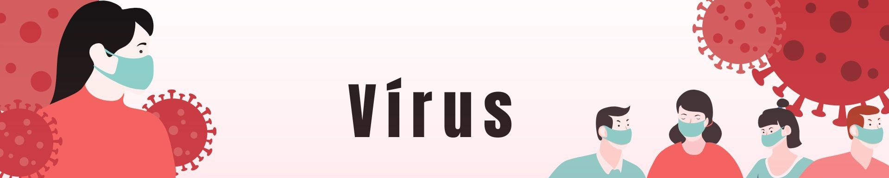

Inicio
Professora
Material
Atividades e Trabalhos
Notas
Vírus são seres microscópicos que não apresentam celular e nem metabolismo próprio.
Esses organismos dependem de uma célula viva para se replicarem, sendo conhecidos devido a essa característica como parasitas intracelulares obrigatórios.
Saiba mais!!